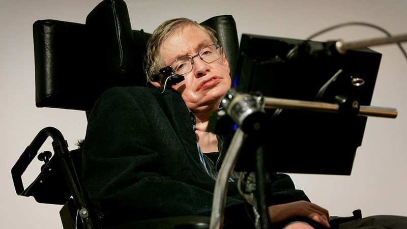
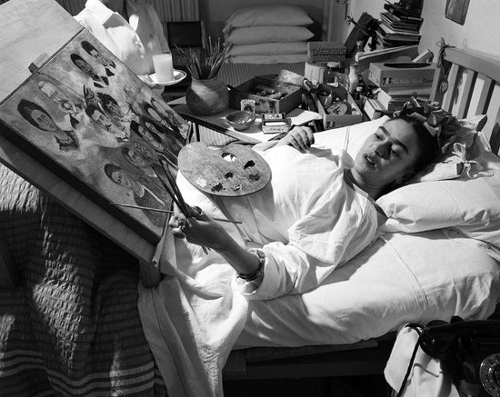
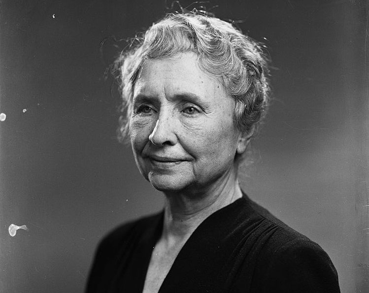

-
Stephen Hawking
Físico teórico britânico, conhecido por suas contribuições à cosmologia, que viveu com ELA (Esclerose Lateral Amiotrófica) por várias décadas.
-
Frida Kahlo
Pintora mexicana famosa, que superou grandes dificuldades físicas após um acidente, e usou sua arte para expressar sua dor e experiências pessoais.
-
Nick Vujicic
Motivador e palestrante australiano, nasceu sem braços e pernas, e inspirou milhões com sua história de superação e positividade.
-
Helen Keller
Escritora e ativista americana, que ficou surda e cega devido a uma doença, mas se tornou um símbolo de luta pelos direitos das pessoas com deficiência.